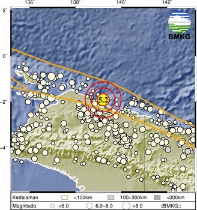
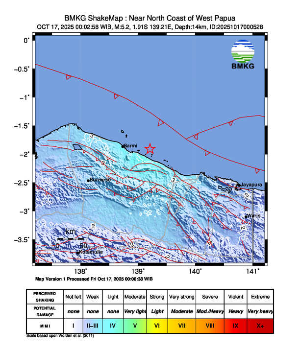

***************************************************************************************
*
***************************************************************************************
:::: BMKG :::: BMKG :::: BMKG ::::
TELAH TERJADI GEMPA BUMI DENGAN PARAMETER SEMENTARA SEBAGAI BERIKUT:
Kekuatan : 5.2 SR
Tanggal : 17-Oct-2025
Waktu Gempa : 00:02:58 WIB
Lintang : 1.91 LS
Bujur : 139.21 BT
Kedalaman : 14 Km
Lokasi:
Near North Coast of West Papua
Keterangan:
51 km Tenggara SARMI-PAPUA
111 km TimurLaut MAMBERAMOTENGAH-PAPUAPGNGN
137 km TimurLaut KASONAWEJA-PAPUA
178 km BaratLaut JAYAPURA-PAPUA
3629 km TimurLaut JAKARTA-INDONESIA
Informasi Tsunami :
Gempa ini tidak berpotensi TSUNAMI
:::: BMKG :::: BMKG :::: BMKG ::::

